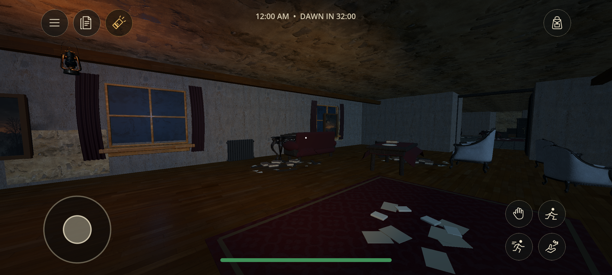
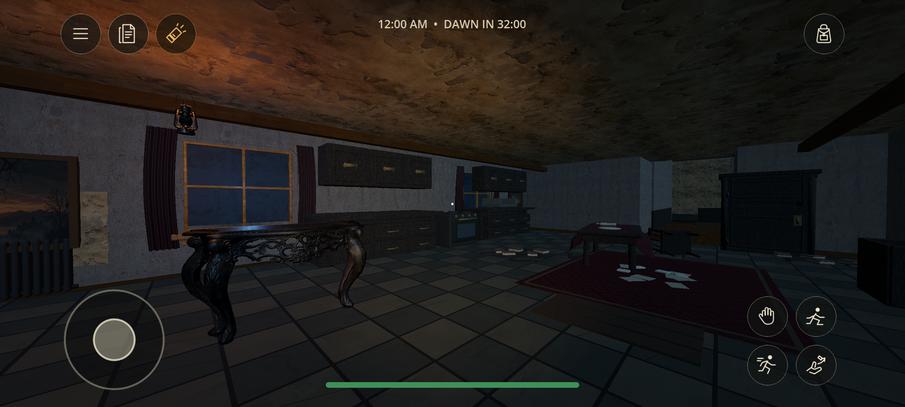
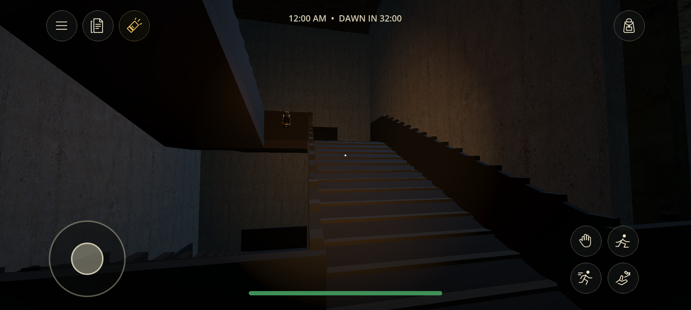
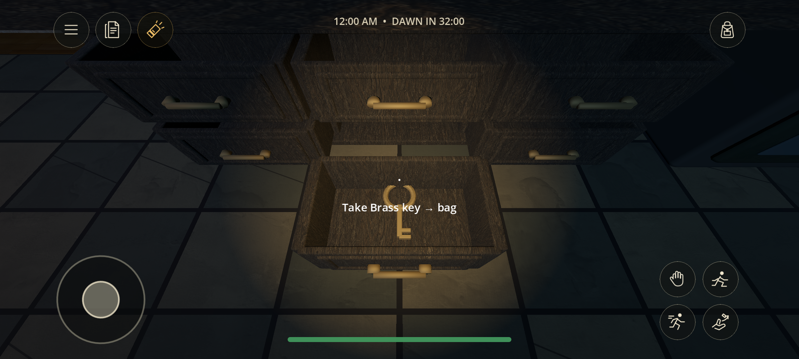
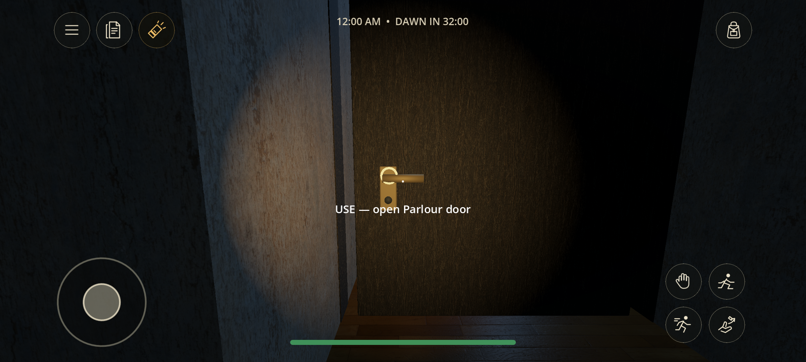

Actual game captures · 18 October 2026
Waiting for Dawn / 0.8.3
Floor containment, clearer door handles, persistent ghost investigation, and new Blender furniture and clutter. These are captures from the running game; all five were rendered by the signed Android APK at 2400×1080.
Closed doors still protect a room. The ghost approaches the reachable side, retains the sound and can enter after opening. Door actions now use the same handle target as the prompt. The exact location of the reported floor hole remains unknown; 5,137 floor probes, off-centre landing walks and recovery were checked.
This is a repair of the current Godot build. Unreal Engine was not installed or connected. Physical-phone touch, headphone balance and long-duration phone performance remain unverified.
Full validation and limitations · Research and editable Blender source · Local signed APK

Android: added sofa, dining setting and clutter
Android: worn furniture and debris
Android: guards along exposed stair edges
Android: open storage
Android: handle targeting and Use prompt